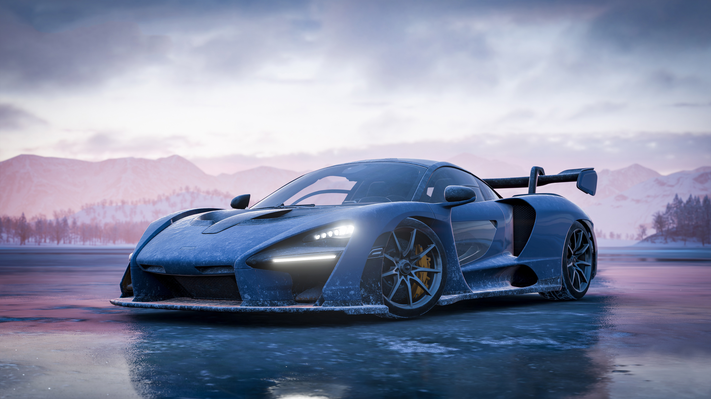
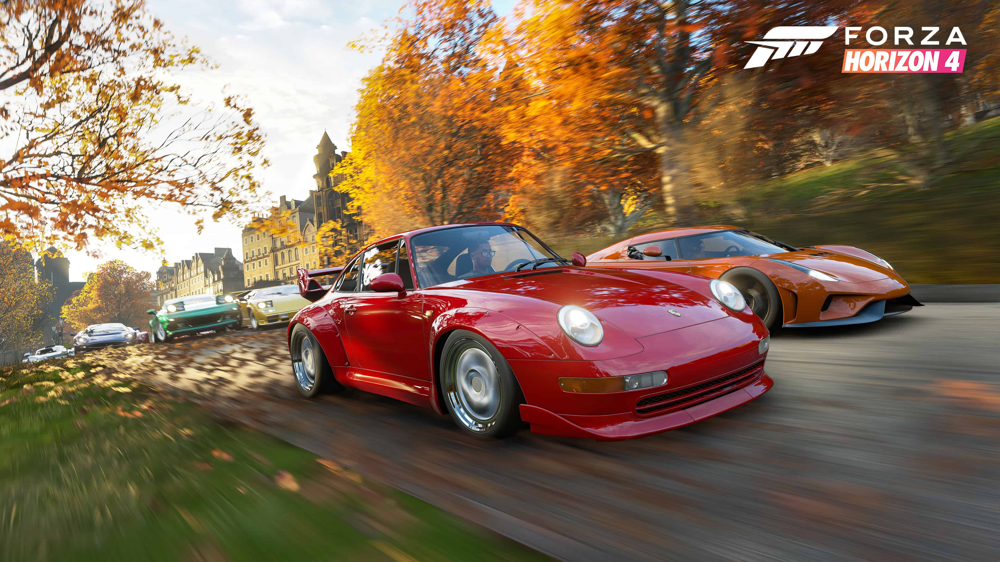
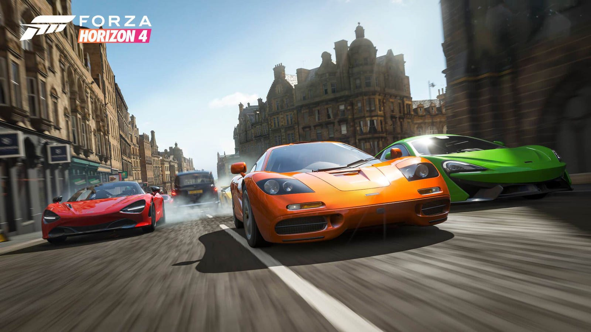
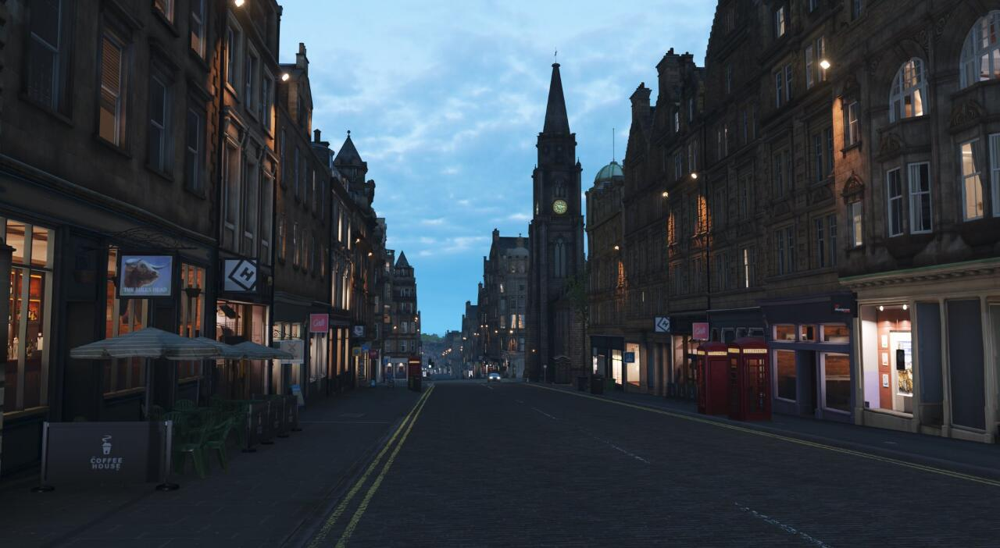
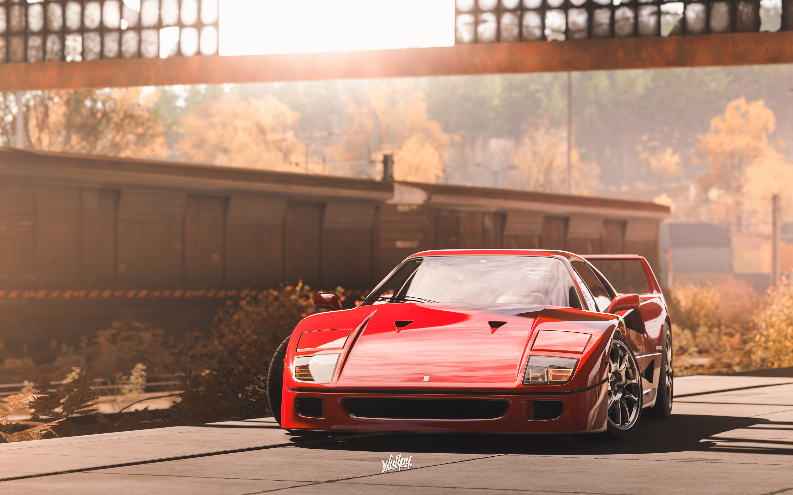
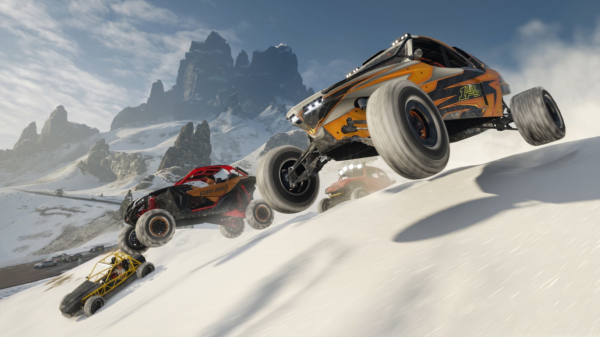
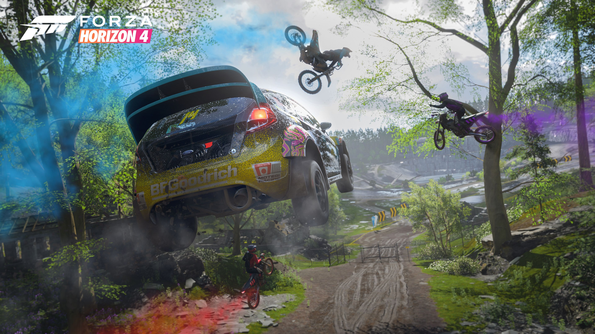

The fourth game in the series is Forza Horizon 4
Top
Forza Horizon 4 is a 2018 racing video game developed by Playground Games and published by Microsoft Studios. It was released on 2 October 2018 for Windows and Xbox One after being announced at Xbox's E3 2018 conference. An enhanced version of the game was released on Xbox Series S/X on 10 November 2020. The game is set in a fictionalised representation of areas of Great Britain. It is the fourth Forza Horizon title and eleventh instalment in the Forza series. The game is noted for its introduction of changing seasons to the series, as well as featuring several content-expanding updates which have included new game modes.
The game is set in an open world environment based in a fictionalised Great Britain, with regions that include condensed representations of Edinburgh, the Scottish Highlands, the Lake District (including Derwentwater), Ambleside and the Cotswolds (including Broadway), Bamburgh among others. The game features a route creator which enables players to create races using completely customised routes.
The game features a dynamic weather system that also depicts the change of seasons. The environment in the world will change depending on the season: for example, Derwentwater would freeze over in winter and allow players the ability to drive on the ice to reach areas of the game world that would be inaccessible during all the other seasons. The seasons are fixed across the game's servers, meaning that all players will experience the same conditions at the same time. After completing a prologue series of events which introduce players to all four seasons, the shared-world seasons will change every week, with the changes happening on Thursdays at 2:30 pm GMT.
Content and gameplay updates
Forza Horizon 4, since its release, has seen numerous expansions and updates. The game has two downloadable content expansions: Fortune Island and Lego Speed Champions. The game has also seen several updates, each introducing new gameplay content, cars, and cosmetic items. Notable updates include the Series 5 update, which introduced the Free DLC Mitsubishi Motors Car Pack, and the Series 9 update, which implemented a system to prevent wallriding and high-speed collisions in online multiplayer.
The game also introduced a 72-player battle royale-style mode called The Eliminator and a new game mode called Super7. The game was released on Steam in March 2021, and despite initial gameplay issues and crashes, it received a patch in April 2021 for various stability improvements. The last major content update for Forza Horizon 4 was the Series 37 update, which introduced a more difficult variant of the Super7 game mode, called Super7 High Stakes. This update also featured a new car, the VUHL 05RR.
Reception
Forza Horizon 4 received “universal acclaim” for the Xbox One version and “generally favourable” reviews for the PC version, according to Metacritic. The Xbox One version is the highest-rated Forza Horizon title and is tied with Forza Motorsport and Forza Motorsport 3 as the highest-rated entry in the Forza series. The game was praised for its changing weather system, which added variety to races and sometimes required players to switch vehicles. The variety of challenges and activities was also appreciated. However, the festival system was criticized as confusing. The game’s attention to car-modelling detail was commended, offering different experiences for each of the 50 vehicles. The game world was criticized for feeling like an idealized version of England.
The setting of Britain was considered less interesting than the previous game’s Australia, but the online modes were liked. The game was praised for its new additions, such as the ability to create custom courses and the return of more creative pursuits with story missions. The winter season received mixed reviews, being unique but potentially less fun due to the lack of traction. The game reached 7 million registered users after the launch of the Fortune Island expansion in January 2019. By June 2019, prior to the launch of the Lego Speed Champions expansion, the game had reached 10 million users. In August 2019, it was announced that the game had topped the 12 million player milestone. By November 2020, the game had been played by 24 million players since launch.
